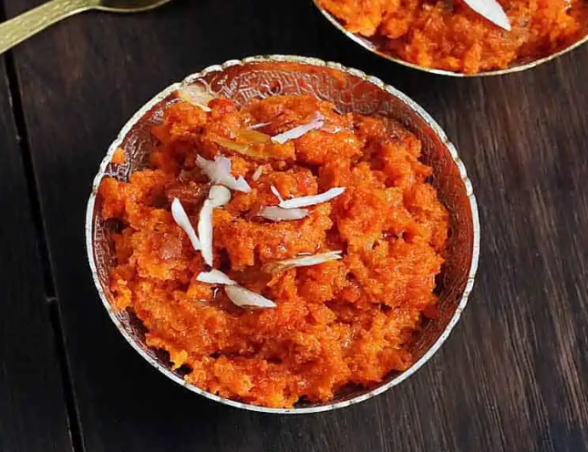

Halwa Recipe

Carrot Halwa Recipe
Indian Carrot Dessert, An extremely simple and popular North Indian dessert recipe made with carrots, milk, milk solids, and dry fruits. It is perhaps one of the most popular and simple Indian desserts which is appreciated not just in India but across the globe. There are myriad ways to make this simple halwa recipe which may or may not involve complex steps, but this recipe post contains a simple pressure cooking method.
Ingredients
- 4 cups grated carrots
- 4 cups grated carrots
- 1/2 cup sugar (adjust according to taste)
- 4 tablespoons ghee (clarified butter)
- 1/4 cup chopped nuts (cashews, almonds, pistachios)
- 1/2 teaspoon cardamom powder
- A pinch of saffron strands (optional)
- Raisins for garnish (optional)
Steps
- Heat a heavy-bottomed pan or kadai on medium heat and add 2 tablespoons of ghee to it.
- Once the ghee has melted, add the grated carrots to the pan. Stir well to coat the carrots with ghee.
- Cook the carrots on medium heat for about 10-12 minutes, stirring occasionally. This will help release the moisture from the carrots
- Add the milk to the pan and mix well. Reduce the heat to low and let the carrots simmer in the milk. Stir occasionally to prevent sticking
- Allow the carrots to cook in the milk until most of the liquid has evaporated. This will take approximately 30-40 minutes. Keep stirring occasionally to prevent burning.
- Meanwhile, in a separate pan, heat the remaining 2 tablespoons of ghee. Add the chopped nuts and sauté until they turn golden brown. Keep them aside.
- Once the liquid has reduced and the carrots are cooked, add sugar to the pan. Mix well until the sugar dissolves.
- Continue cooking the mixture on low heat until the halwa thickens and starts to leave the sides of the pan. This will take another 15-20 minutes. Keep stirring frequently.
- Add the cardamom powder and saffron strands (if using). Mix well to combine the flavors.
- Finally, add the sautéed nuts to the halwa and mix them in. Reserve a few nuts for garnish, if desired.
- Remove the pan from heat and let the halwa cool down slightly before serving. You can serve it warm or chilled, garnished with raisins and extra nuts.
- Enjoy your homemade carrot halwa!
Note:The cooking time may vary depending on the thickness of the carrots and the desired consistency of the halwa. Adjust the sugar quantity according to your taste preference.